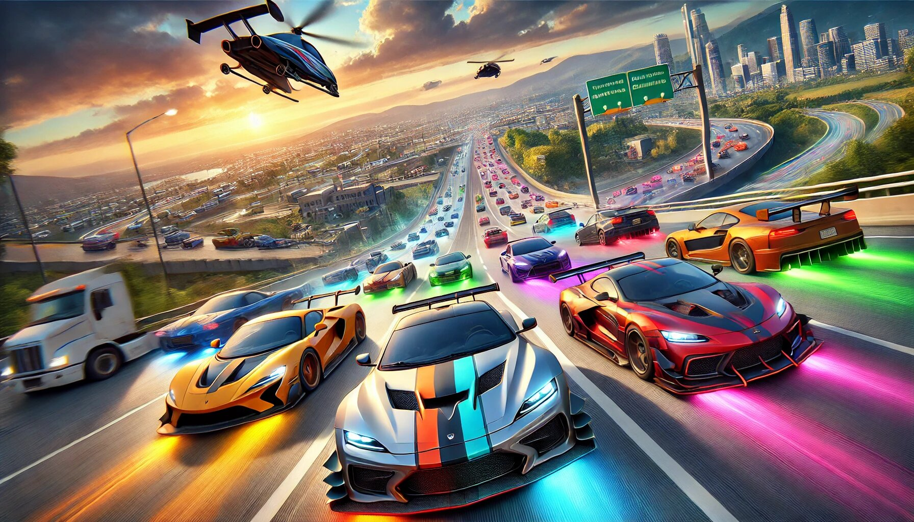

Traffic Racer is one of the most popular mobile racing games, offering an adrenaline-pumping experience for racing enthusiasts. With its simple yet engaging gameplay, realistic car physics, and a variety of tracks, it has captured the attention of millions of players worldwide. But is it truly a good game for those who love racing, cars, and customization? And what if you could unlock unlimited money to enhance your gaming experience? In this article, we'll explore the game's features, the benefits of unlimited money, how to get the latest version, and a step-by-step guide to mastering Traffic Racer like a pro.
Traffic Racer MOD APK offers an enhanced version of the hit mobile racing game, giving players instant access to premium features without grinding. This modified APK provides unlimited in-game currency to buy and upgrade all vehicles, unlock every track, and enjoy full customization options from the start. Perfect for racing enthusiasts who want to experience the game's full potential, the MOD version lets you drive elite sports cars and supercars immediately while bypassing the usual progression system. However, players should download only from reputable sources to avoid security risks, and be aware that using MODs may violate the developer's terms of service. For those looking to enjoy Traffic Racer with all restriction
Traffic Racer stands out in the mobile racing genre because of its straightforward yet addictive gameplay. Unlike complex simulation games, it offers an arcade-style experience that is easy to pick up but challenging to master. The game puts you behind the wheel of various cars, navigating through traffic at high speeds while avoiding collisions. The sense of speed and precision required makes it a thrilling experience for casual and hardcore racers alike.
One of the biggest strengths of Traffic Racer is its realistic car handling. Each vehicle responds differently to acceleration, braking, and steering, giving players a sense of control and immersion. Whether you're driving a sports car, a sedan, or a high-performance supercar, the game ensures that each ride feels unique. This attention to detail makes it a great choice for car enthusiasts who appreciate different driving dynamics.
A key aspect of any racing game is the selection of cars, and Traffic Racer doesn't disappoint. The game features a wide range of vehicles, from everyday sedans to high-speed exotics. Each car can be upgraded to improve its speed, acceleration, handling, and braking. With unlimited money, players can unlock and max out every vehicle in the garage, experimenting with different builds to find the perfect ride for their playstyle.
Upgrading cars is essential for progressing in the game, as higher-tier vehicles perform better in races. The ability to customize and fine-tune each car adds depth to the gameplay, allowing players to optimize their machines for different tracks and challenges. Whether you prefer a nimble car for weaving through traffic or a powerhouse for straight-line speed, Traffic Racer offers plenty of options to suit your preferences.
Traffic Racer features multiple tracks, each with its own traffic patterns and environmental conditions. From city highways to countryside roads, the game provides diverse settings that keep the gameplay fresh. The traffic AI is designed to mimic real-world driving, with cars changing lanes, speeding up, and slowing down unpredictably. This dynamic environment forces players to stay alert and adapt their driving strategies on the fly.
One of the most exciting aspects of the game is the endless mode, where players can test their skills in an infinite race with increasing difficulty. This mode is perfect for those who enjoy high-score challenges and want to push their reflexes to the limit. With unlimited money, players can unlock all tracks early, allowing them to experience every environment without grinding for in-game currency.
Customization is a major draw for racing fans, and Traffic Racer offers several ways to personalize your vehicles. Players can change car colors, apply different paint jobs, and even modify performance parts to enhance their ride's capabilities. While the game doesn't offer deep visual customization like some AAA racing titles, the available options are enough to give your car a unique look.
Unlimited money removes the financial barrier, letting players experiment with all customization options without restrictions. Whether you want a sleek black sports car or a vibrant neon racer, the choice is yours. This freedom enhances the overall enjoyment of the game, as players can fully express their style without worrying about costs.
Earning money in Traffic Racer can be time-consuming, as it requires completing races and challenges. However, with unlimited money, players can bypass the grind and instantly access all cars, upgrades, and customizations. This feature is especially beneficial for those who want to focus on racing rather than resource management.
Having unlimited funds allows players to:
This makes the game more enjoyable for players who prefer an unrestricted experience, letting them dive straight into high-speed action without limitations.
To ensure the best gameplay experience, it's important to download the latest version of Traffic Racer. The developers regularly release updates with new cars, tracks, and bug fixes. Here's how to get the most recent version:
Before installing any third-party APK, ensure your device allows installations from unknown sources (found in security settings) and scan the file for viruses.
Whether you're a beginner or an experienced player, these tips will help you dominate Traffic Racer:
Start with a balanced car that has good speed and handling. As you progress, invest in faster vehicles like sports cars and supercars. With unlimited money, you can immediately buy the best cars available.
Focus on upgrading speed and acceleration first, as they have the most impact on race performance. Handling and braking are also important but can be improved later.
The key to high scores is avoiding collisions while maintaining speed. Practice swiping smoothly between lanes without sudden movements. Anticipate traffic patterns to minimize braking.
Missions provide extra cash and XP. Even with unlimited money, completing challenges helps unlock achievements and improves your skills.
Try time trial, endless, and two-way traffic modes to test different skills. Each mode offers a unique challenge and helps you become a better racer.
With unlimited money, apply different colors and upgrades to make your cars stand out. Personalizing your ride adds an extra layer of enjoyment.
Traffic Racer is an excellent choice for mobile racing fans who enjoy fast-paced, arcade-style gameplay. Its variety of cars, dynamic tracks, and customization options provide hours of entertainment. The addition of unlimited money further enhances the experience by removing grinding and allowing players to focus on pure racing fun.
If you're looking for a game that combines simplicity with depth, Traffic Racer is definitely worth downloading. With the latest version and a few expert tips, you'll be speeding past traffic and setting high scores in no time. So buckle up, hit the gas, and enjoy the ride!